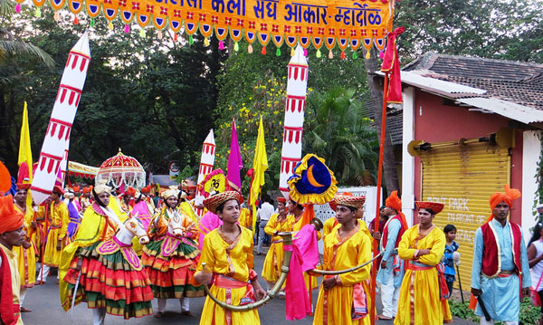

Welcome to Goa!

Goa, situated on the western coast of India, is renowned for its rich cultural heritage, stunning beaches, and
vibrant festivities. The culture of Goa is a unique blend of Portuguese and Indian influences, reflected in its
architecture, cuisine, music, and festivals.
Festivals play a significant role in Goa's cultural calendar. The most famous festival is Carnival, a four-day
extravaganza held annually before Lent. It features colorful parades, music, dance, and elaborate floats,
showcasing Goa's joyous spirit and cultural diversity. Shigmo, a spring festival celebrated with processions and
folk dances, and Sao Joao, where locals jump into wells to celebrate St. John the Baptist, are other notable
celebrations that highlight Goa's religious and cultural heritage.
Goan cuisine is a delightful fusion of Indian and Portuguese flavors, known for its seafood delicacies, spicy
curries, and use of coconut milk. Staple dishes include Goan fish curry, Vindaloo (spicy pork dish), and Xacuti
(chicken or lamb curry with roasted spices). Feni, a locally brewed liquor made from cashew or coconut, is a
popular beverage enjoyed during festive occasions.
Music and dance are integral to Goan culture, with traditional folk dances like Fugdi and Dekhnni adding vibrancy
to celebrations. Goan music, influenced by Portuguese melodies and rhythms, features the use of instruments like
the guitar, mandolin, and the traditional Goan drum known as the Ghumot. Konkani music, with its lively tunes and
poetic lyrics, is a cherished part of Goa's cultural identity.
Goa's architectural heritage includes colonial-era churches, majestic forts, and charming Portuguese-style houses
with colorful facades. The Basilica of Bom Jesus, a UNESCO World Heritage site housing the mortal remains of St.
Francis Xavier, and the Se Cathedral, known for its grandeur and historical significance, are iconic landmarks.
Old Goa, with its rich concentration of churches and convents, provides a glimpse into the state's colonial past.
Handicrafts in Goa range from intricate brass and copperware to handmade pottery and traditional handicrafts made
from coconut shells and bamboo. The Kunbi saree, adorned with traditional motifs and patterns, and the vibrant
Mario Miranda art, depicting Goan life through colorful illustrations, are notable cultural artifacts. These
crafts showcase the skill and creativity of local artisans, preserving Goa's cultural heritage.